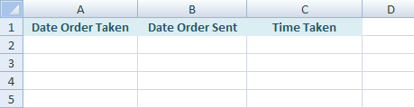
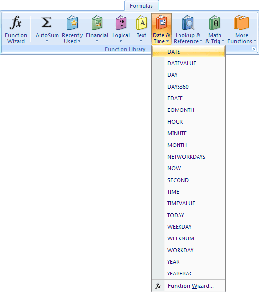
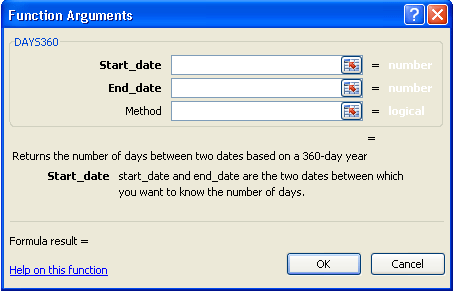
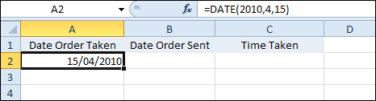
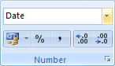
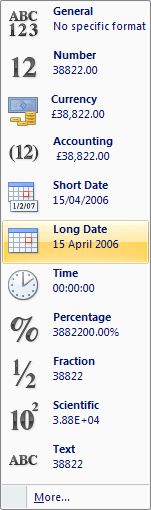
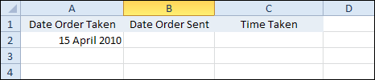
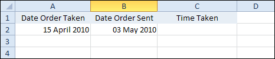
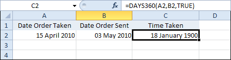
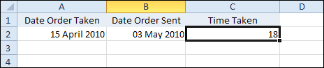

Free
computer Tutorials
|
Free
computer Tutorials
|
|
 HOME HOME
|
|
||||
Microsoft Excel 2007 to 2010The Date Function in Excel
There are a numbers of different reasons why you would want a Date or Time function in a spreadsheet: If you're running your own company, you might want to record when an order was received and when it was processed. You could then calculate the difference between the two, so that you check how fast the orders were being processed. We'll do that now.
The Excel Date FunctionAs an example of how to use date functions in Excel 2007 or Excel 2010, we'll contruct as simple spreadsheets for an order form. We'll enter the date an order was taken, the date the order was sent, and how long it took to be processed. So, to make a start, create the spreadsheet below :  Click inside cell A2, and we'll enter a date. To enter a date, Click on the Formulas menu at the top of Excel. Then locate the Function Library panel. From the Function Library panel, click on Date & Time:  As you can see, there's quite a lot of Date and Time functions! Click on Date from the menu, and you'll get the following dialogue box:  You're now being asked enter a full date.
 Notice the DATE Function in the Formula bar: =DATE(2010, 4, 15) Between the round brackets of DATE, the Year comes first, then the Month, then the Day. If you want to format your date as say Monday 15th of April, then you
need to click on the Home tab from the Ribbon at the top of Excel.
Locate the Number panel, and you'll see Date already displayed:  Click the down arrow to see more options:  Click the Long Date item. Or click on More at the bottom to see some more Date formats to choose from. Your spreadsheet will then look like this:  In cell B2, under your Date Order Sent heading, enter another Date Function. This time, have the date read May 3, 2010:  In cell C2, under Time Taken, we'll work out how many days the order took to be sent out.
The Days360 Function in ExcelWhen you want to work out how many days there are between two dates, the function to use is Days360( ). We want to work out how many days there are between the 15th of April 2010 and the 3rd of May 2010. So click inside cell C2 and do the following: Click on the Formulas tab at the top of Excel. Then locate the
Function Library panel. From the Function Library panel, click
on Date & Time. From the menu, click on Days360().
You should see the Function Arguments dialogue box appear again. This
time, it will look like this: The Days360 function needs a start date and an end date. You can enter your cell references here. So in the Start_date box, enter A2. In the End_Date box, enter B2. If you enter the word True in the Method box, Excel will calculate using the European date system. Click OK, to return to your spreadsheet and you might see this:  (If your C2 cell has a lot of #### symbols in it, it means that your column is not wide enough. Widen the C column and they'll go away!) The answer we got was January 18th 1900! The reason for such a bizarre answer is that we've formatted the C2 cell as a date. But the answer to the Days360 function is not a date - it's a number. If you have the same strange answer, then format your C2 as a number. Your spreadsheet will then look like ours below:  So the difference between the two dates is 18 days. Entering dates can be fairly straightforward, like cells A2 and B2. But performing calculations with dates can be slightly more complex. To get you some more practise, here's an exercise.
Use a Days360 function to work out how many days are left before your next birthday. Instead of typing out the current date in say cell A2, you can use this inbuilt function: =Now( ) The Now function doesn't need anything between the round brackets.
Once you have today's date, you can enter your birthday in say cell
B2.
In the next part, we'll take a look at how to handle Time functions in Excel . |
|||||
|